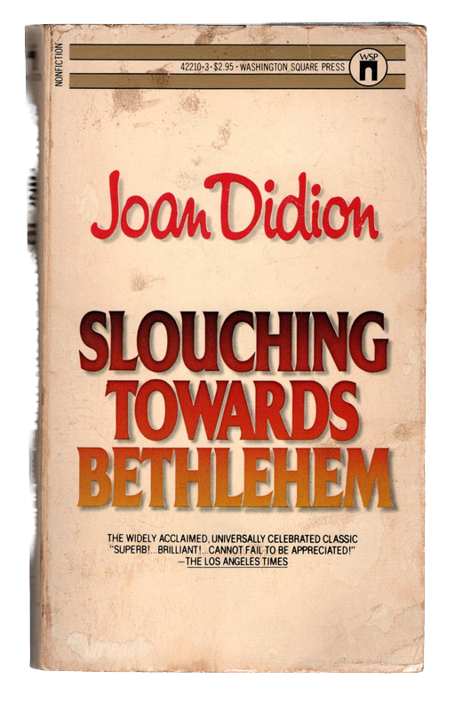
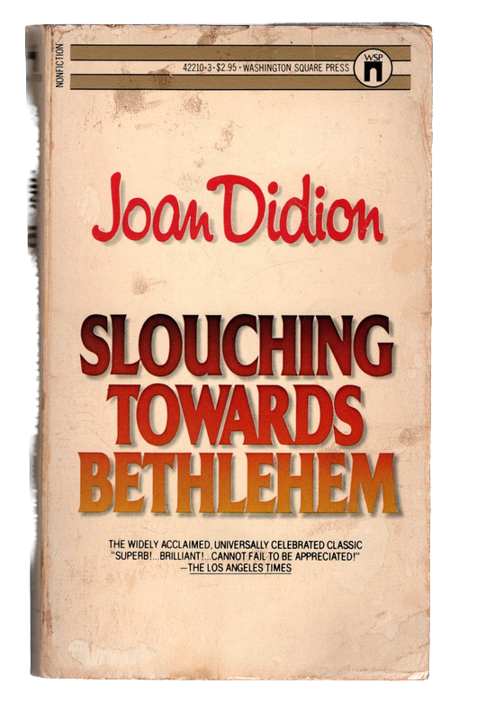
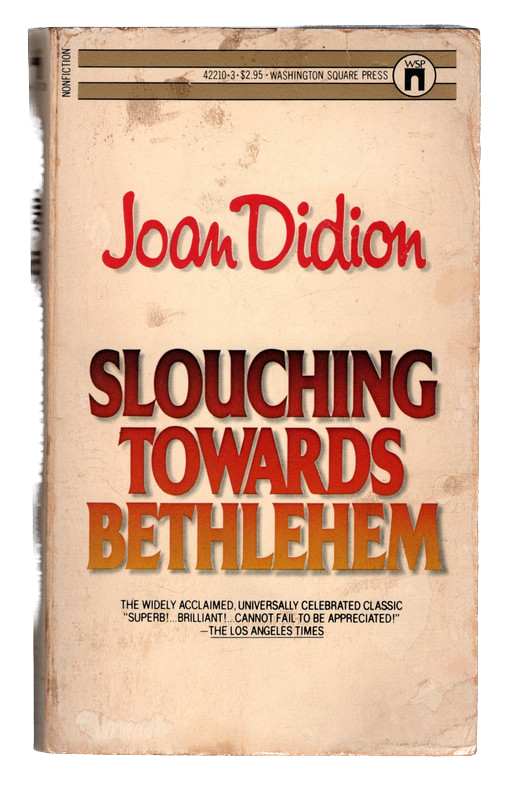
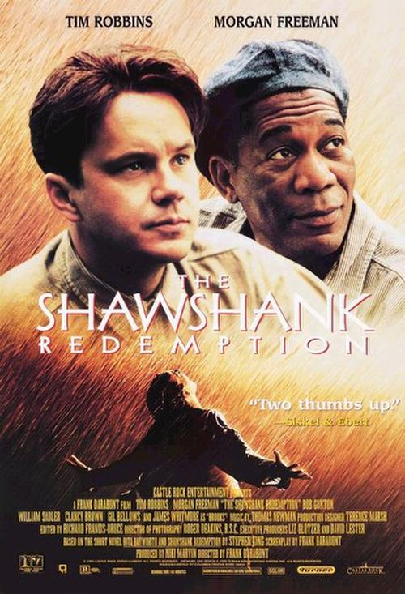
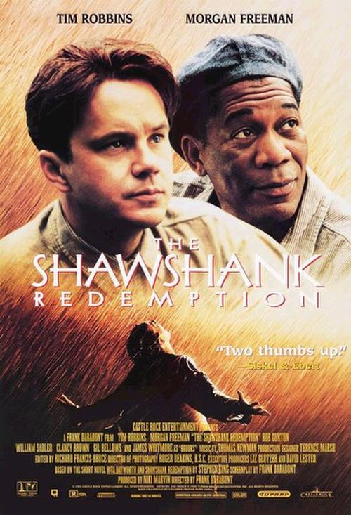

Ever Tried. Try Again. J'accepte la grande aventure d'être moi! To a mind that is still, Ever Failed. Fail Again. - Simone de Beauvoir the entire world surrenders. No Matter. Fail Better. - Zhuangzi - Samuel Beckett What matters most is how well you walk through the fire. - Charles Bukowski
Life is simple. We complicate it. It’s not about doing extraordinary things. It’s making the ordinary things extraordinary.
Meaning and reality were not hidden somewhere behind things, they were in them, in all of them. - Siddartha, Herman Hesse
We don't make mistakes. Just happy little accidents. - Bob Ross



 
